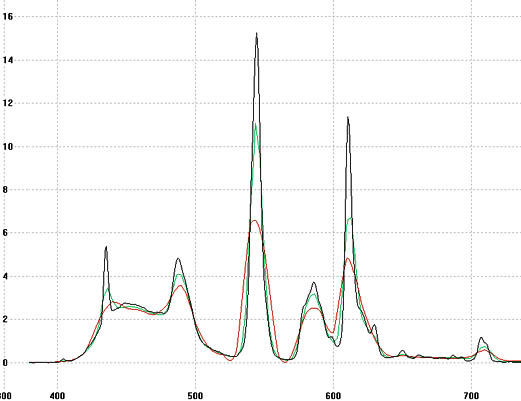

Does the
i1pro High Resolution mode improve accuracy ?
A question that has been asked is : "You've extended the Eye-One Pro with a high resolution
spectral mode, giving readings at 3.3nm spacing rather than the
default 10nm. Does this mode improve accuracy ?"
This is a quite reasonable question. The following attempts to
answer it.
Why would a higher
resolution spectral mode improve accuracy ?
A spectrometer computes CIE tri-stimulus values by measuring
spectral values and then weighing those values by the observer
curves before summing the weigted values. The accuracy depends on
the correct weighting being applied at each wavelength. If the color
is composed of very narrow spectra peaks, as is sometimes the case
for certain light sources and many display devices, then the exact
positioning of one of the peaks on the observer curves may be
influencial in the final color value, and too coarse a quanization
of the spectral readings may lead to tri-stimulus errors. So in
theory increasing the spectral reading resolution to 3.3 nm should
lead to improved color accuracy with narrow spectra color sources.
Why may this not work in
practice ?
The instrument spectral resolving power is set by a number of
factors, and a critical one is the entrance slit width. By
measuring a very narrow band source such a as a laser, using the
default 10nm resolution indicates a FWHM (Full
width at half maximum) of about 25nm. Doing a measurement at
3.3nm resolution reveals that the optical limit seems to be about
15nm, so there is some hope of improvement from that perspective.
Another factor is that the calibration data for the instrument is
only given at 10nm intervals. So to produce calibrated readings at
3.3nm intervals, it is necessary to up-sample the calibration data
with sufficient accuracy. If the calibration data is sufficiently
smooth (indicating that the underlying device characteristics are
also smooth), or any slight inaccuracy will get calibrated out
(which is typically the case for reflective measurements) then
this may not be a limitation either. In the case of the i1pro2,
which seems to have a diffraction grating/light sensor with a less
smooth spectral efficiency curve than the Rev A - D models, the
task of up-sampling the emissive calibration data with sufficient
accuracy is more difficult.
The verification experiment
To give some indication of whether ArgyllCMS's high resolution
spectral mode is capable of improving color measurement accuracy, or
at least to indicate that it doesn't noticeably worsen it, the
following fairly simple, real world experiment was performed:
A measurement target consisting of white + primary + secondary
colors (White, Red, Green, Blue, Cyan, Magenta, Yellow) repeated 10
times was used. This target was displayed on a conventional LCD
screen with a CCFL backlight (MacBook display), and measured using
using ArgyllCMS V1.6.0 dispread:
1) Using a JETI
specbos 1211 reference Tele-Spectro-Radiometer.
2) Using an i1pro2 in standard 10nm mode.
3) Using an i1pro2 in ArgyllCMS 3.3nm mode.
The resulting readings were then analyzed using colverify.
The results were analyzed two ways, first in absolute value error
terms, and secondly in brightness (Y) normalized terms, the latter
corresponding to the typical way such readings are used for display
calibration and profiling.
A second, similar experiment was run on a CRT type display.
Results:
LCD display:
Absolute errors of i1pro2 10nm mode to specbos 1211:
Total errors (CIEDE2000): peak =
3.070420, avg = 2.204137
Absolute errors of i1pro2 3.3nm mode to specbos 1211:
Total errors (CIEDE2000): peak =
2.108411, avg = 1.568577
White Y normalised errors of i1pro2 10nm mode to specbos 1211:
Total errors (CIEDE2000): peak =
2.419800, avg = 0.747926
White Y normalised errors of i1pro2 3.3nm mode to specbos 1211:
Total errors (CIEDE2000): peak =
1.595033, avg = 0.578270
So in this particular situation, hi-res mode improves accuracy by
somewhere between 0.2 and 0.6 DeltaE 2K.
Example of white spectrum for the three measurements (red: 10nm
i1pro2, green: 3.3nm i1pro2, black: specbos):

CRT display:
Absolute errors of i1pro2 10nm mode to specbos 1211:
Total errors (CIEDE2000): peak =
1.516886, avg = 0.965740
Absolute errors of i1pro2 3.3nm mode to specbos 1211:
Total errors (CIEDE2000): peak =
1.751776, avg = 0.887878
White Y normalised errors of i1pro2 10nm mode to specbos 1211:
Total errors (CIEDE2000): peak =
1.509129, avg = 0.654752
White Y normalised errors of i1pro2 3.3nm mode to specbos 1211:
Total errors (CIEDE2000): peak =
1.284044, avg = 0.622501
Conclusions:
The results for the conditions of this particular experiment
indicate that ArgyllCMS High Resolution mode can very slightly
improve colorimetric measurement accuracy of display devices.
Accuracy may conceivably be improved a little more than indicated by
this experiment for i1pro rev A-D instruments which have a smoother
diffraction grating/light sensor characteristic, but it is also
conceivable that an unfortunate combination of display spectra and
the i1pro2 may result in reduced accuracy. More extensive testing of
a range of instruments and illuminants would be needed to allay such
a concern.
In summary: the High Resolution mode is unquestionably useful
for showing more spectral detail, and demonstrates promise of
improved accuracy, but should probably not be used used for
colorimetric measurement when the highest possible confidence is
desired.
Raw Data:
The raw measurement data is available in this .ti3 archive.